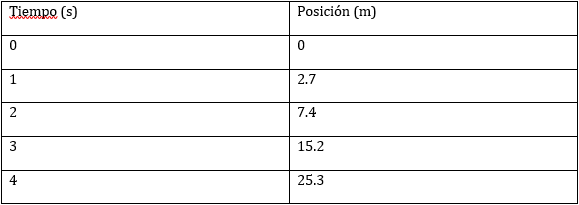
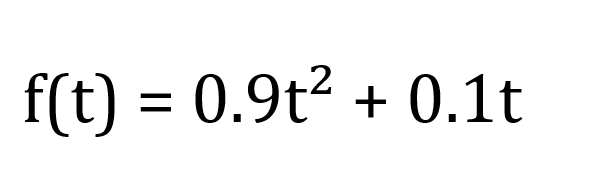
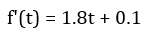
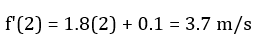
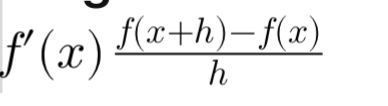
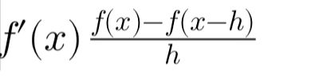
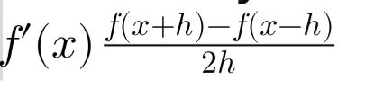

Descripción del Caso de Estudio
Un automóvil recorre una carretera y se registran sus posiciones en intervalos de tiempo iguales. Se desea conocer su velocidad instantánea en el tiempo t = 2 segundos, usando métodos de diferenciación numérica: derivada hacia adelante, hacia atrás y central.
Datos Registrados
Variables Involucradas
• t: Tiempo en segundos (s), en el cual se registra la posición del automóvil.
• f(t): Función que representa la posición del automóvil en metros (m) respecto al tiempo.
• h: Paso o intervalo de tiempo entre mediciones, en este caso h = 1 s.
• f'(t): Derivada de la función posición, que representa la velocidad instantánea del automóvil.
Funcion Utilizada
Se propone la siguiente función para modelar el movimiento del automóvil:
La derivada de esta función es:
Esta derivada nos permite estimar la velocidad instantánea en cualquier momento. Por ejemplo, en t = 2 segundos:
Objetivo general:
Estimar la velocidad instantánea de un automóvil en un instante específico (t = 2 s), aplicando métodos de diferenciación numérica.
Objetivos específicos:
o Aplicar el método de derivada hacia adelante para estimar la velocidad en t = 2 s.
o Aplicar el método de derivada hacia atrás para la misma estimación.
o Aplicar el método de derivada central, que combina datos anteriores y posteriores al instante t = 2 s.
Restricciones y Condiciones
Condiciones
Se estudia el movimiento de un automóvil cuya posición se registra en intervalos de tiempo iguales.
El análisis se enfoca en calcular la velocidad instantánea del automóvil en el tiempo t = 2 segundos.
Los datos registrados incluyen el tiempo (en segundos) y la posición (en metros).
El intervalo de tiempo entre mediciones es constante: h = 1 s.
Los datos disponibles corresponden a los tiempos t = 0, 1, 2, 3 y 4 segundos.
Se utiliza una función cuadrática propuesta para modelar el movimiento del automóvil: f(t) = 0.9t² + 0.1t.
Se aplican tres métodos de diferenciación numérica: derivada hacia adelante, derivada hacia atrás y derivada central
Se utiliza la información de la posición del automóvil para calcular la derivada numérica en t = 2 s.
Restricciones
El paso de tiempo entre mediciones es fijo (h = 1 s); no se considera ninguna variación temporal.
El análisis está limitado al intervalo de tiempo [0, 4] segundos, ya que no se disponen de datos fuera de este rango.
La función f(t) = 0.9t² + 0.1t es una aproximación del movimiento del automóvil y se considera válida solo en el intervalo observado.
No se pueden aplicar todos los métodos numéricos en todos los puntos; por ejemplo, no es posible usar la derivada hacia adelante en t = 4 s ni hacia atrás en t = 0 s.
Los métodos de diferenciación numérica utilizados son de primer orden, lo que introduce un margen de error en las estimaciones.
No se consideran factores externos como fricción, pendiente o aceleración variable fuera de lo modelado.
Calculos
Derivada Hacia Adelante
Fórmula: f'(x) ≈ (f(x + h) - f(x)) / h
Datos usados: f(2) = 7.4, f(3) = 15.2, h = 1
Cálculo: f'(2) ≈ (15.2 - 7.4) / 1 = 7.8 m/s
Derivada Hacia Atras
Fórmula: f'(x) ≈ (f(x) - f(x - h)) / h
Datos usados: f(2) = 7.4, f(1) = 2.7, h = 1
Cálculo: f'(2) ≈ (7.4 - 2.7) / 1 = 4.7 m/s
Derivada Central
Fórmula: f'(x) ≈ (f(x + h) - f(x - h)) / (2h)
Datos usados: f(3) = 15.2, f(1) = 2.7, h = 1
Cálculo: f'(2) ≈ (15.2 - 2.7) / 2 = 6.25 m/s
Resultados
Los resultados obtenidos mediante derivadas numéricas permiten estimar la velocidad en t = 2 s a partir de datos discretos de posición. La derivada hacia atrás fue la más precisa (4.7 m/s), seguida de la central (6.25 m/s) y, finalmente, la derivada hacia adelante, que presentó el mayor error (7.8 m/s). Esto evidencia que la elección del método influye en la exactitud, especialmente cuando los datos no siguen un comportamiento ideal.
Comparación entre metodos

En el análisis de la velocidad mediante métodos numéricos, se observó que todos los enfoques utilizados sobreestimaron el valor real de 3.7 m/s. La derivada hacia atrás resultó ser la más cercana al valor exacto, aunque aún presentó cierta desviación. A pesar de que la derivada central es teóricamente más precisa por su simetría, en este caso mostró un mayor error, probablemente porque los datos de posición no siguen con exactitud una función cuadrática ideal. Por otro lado, la derivada hacia adelante fue la que presentó el mayor error, lo cual sugiere que el cambio de posición entre los tiempos t = 2 y t = 3 segundos fue más abrupto en comparación con los intervalos anteriores, afectando así la estimación.